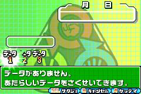
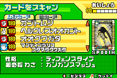

Kouchuu Ouja Mushiking - Greatest Champion e no Michi (Japan)
Stateless / Passcode Debug Menu Patch
Cartridge Identity
- Game Code
BK6J(FamilyBK6)- Header Title
MUSHIKING GC- Maker / Revision
8P/ rev0- ROM Size
- 32.0 MiB (33,554,432 B)
- Save Media
None / Unknown- SHA-256
44e5793ffd95dd1701e67b1401816637e7aeef8982d352d9c5c11dc6897d5853- Engine / SDK Group
comm-001(196 families)
Screenshots

Debug Menu Re-Enablement Patch (.ips)
Download BK6J-debug.ips (15 B IPS / 2 B delta)
- Hook Mechanism
thumb_imm_task_override· Patch initial task spawn at 0x0800033a (movs r0, #21 -> movs r0, #6) to spawn debug menu process- IPS SHA-256
55f9de0371d1d29af1547ec3a4b79d528921c5706e49e39961e55a5cbff16efd
gbakit patch apply BK6J-debug.ips original.gba patched-debug.gba

Cartridge Storage Architecture: Stateless / Passcode
Zero non-volatile battery hardware: This cartridge PCB contains ROM only (no SRAM, Flash, or EEPROM chips). Progression is preserved via on-screen passcodes or session-only gameplay. No
.sav file is generated or required.
ROM Assets, Compression & Audio
- BIOS Compression
- LZ77 (
0x10): 12,824 streams · RLE (0x30): 0 streams - ROM Pointer Tables
- 1,377 tables (6 pointing to validated compressed streams)
- SDK Backup Tags
SRAM_V113
Hardware MMIO Subsystems
ppu_display0x8001cb0,0x8004cf0,0x8005390